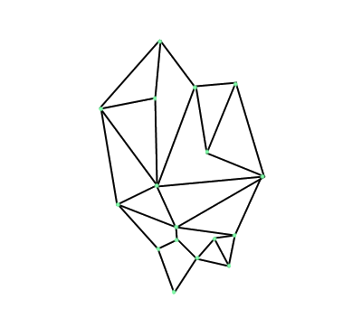
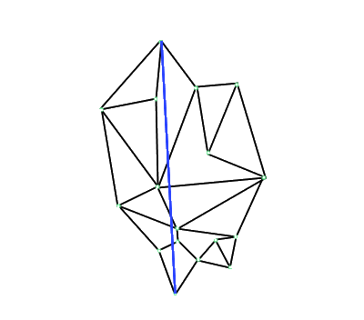
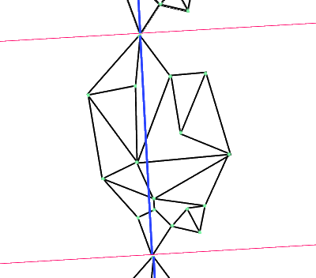
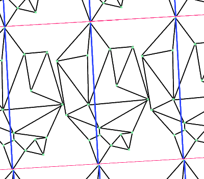
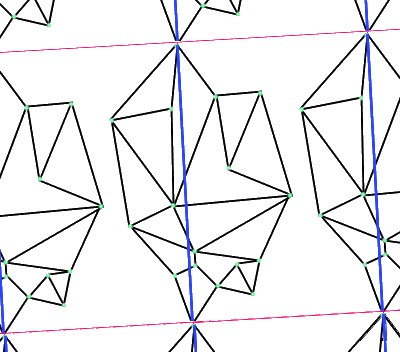
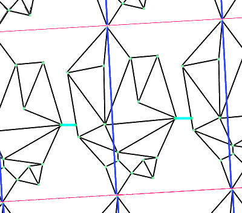

Nous allons essayer d'expliquer sa démarche, et de démontrer, avec nos propres mots et nos formulations,
la conjecture du nid d'abeille, nous essayerons d'illustrer les concepts.
Il faut créer une formulation mathématique à cette conjecture, nous allons donner quelques définitions
d'objets mathématiques nécessaires à la compréhension du théorème.
On va tout d'abord énoncer les différentes définitions utilisées ci-dessous
Nous verrons dans la fin de cette partie que Thomas C. Halles utilise beaucoup de fonction qui ne gardent
que certaines valeurs, c'est une façon équivalente de faire la troncation d'ensembles. Nous ne savons
cependant pas exactement pourquoi il a choisit ces valeurs particulières.
Courbe lisse
Une courbe dans le plan de classe $\mathcal{C}^{\infty}$ sera qualifiée de lisse.
Graphe de $\mathbb{R}^2$ composé de courbes lisses
Un graphe de $\mathbb{R}^2$ composé de courbes lisses est un ensemble de points dans le plans reliés
par des courbes lisses qui ne se croisent pas entre elles, ni avec elles mêmes.
Graphe localement fini
Un graphe infini dont chaque sommets a un degré fini est dit localement fini.
La conjecture du nid d'abeille
Soit $\Gamma$ un graphe localement fini de $\mathbb{R}^2$, composé de courbes lisses
et tel que $\mathbb{R}^2 \backslash \Gamma$ ait une infinité de composantes connexes
bornées, toute d'aire 1.
Soit C l'union de ces composantes bornées.
Cependant ce problème pose problème car il n'est pas assez général.
Et l'auteur Thomas C. Halles se demande pourquoi a t'on besoin d'utiliser une limite supérieure.
La conjecture du nid d'abeille pour les ensembles ouverts non connexes
Nous avons choisis de simplifier le théorème suivant, mais en restant assez général pour la suite de notre mémoire.
Nous allons introduire les aspects mathématiques nécessaire à la compréhension du théorème.
Nous devons calculer la longueur d'une courbe paramétrée, si la courbe paramétrée est régulière,
c'est à dire de classe $C^1$, la longueur d'une courbe paramétrée $\alpha : I \rightarrow \mathbb{R}$ est donnée par
$\int^b_a ||\alpha ' (t) || dt$. Mais si la courbe paramétrée n'est pas de classe $C^1$, nous ne pouvons plus
utiliser cette formule, on introduira donc la notion de courbe rectifiable pour ce cas de figure.
Courbe rectifiable
Soit $C = ([a, b], f)$ un arc paramétré. Pour d une subdivision de $[a, b]$ donnée par $t_0 = a < t_1 < \cdots < t_n = b$, on note :
$$
L(d) = \underset{i=0}{\overset{n-1}{\sum}} ||\overrightarrow{f(t_i)f(t_{i+1}}||
$$
On dit que C est rectifiable si $\left\{ L(d) ;~d~subdivision~de~[a,b] \right\}$ est majoré.
Dans ce cas, on appelle longueur de C la borne supérieure de cet ensemble.
Une courbe rectifiable est donc simplement une courbe dont on peut calculer sa longueur.
Pour simplifier la preuve, nous verrons la mesure de Haussdorf comme une mesure de Lebesgue.
Mesure de Lebesgue
Soit $(\mathbb{R},\mathcal{B(\mathbb{R})})$ l'espace mesurable $\mathbb{R}$ muni de sa tribu borélienne (c'est-à-dire la plus petite $\sigma$-algèbre contenant l'ensemble des ouverts). Il existe une unique mesure notée $\lambda$ sur cet espace mesurable qui possède les propriétés suivantes :
$\forall$ a $\in \mathbb{R}$, $\forall$ A $\in \mathbb{R}$, $\lambda$(a+A)=$\lambda$(A)
$\lambda([0,1])=1$
La conjecture du nid d'abeille pour les ensembles ouverts non connexes
Soit K un ensemble compact dans le plan contenant des ensembles disjoints mesurables $R_1, R_2$, ...
On suppose que $R_i$ a une frontière rectifiable $\partial R_i$ pour tout i.
On pose $\alpha _i = min(1, aire(R_i))$.
On pose $\Gamma = \underset{i}{\cup} \partial R_i$.
On suppose qu'il existe i tel que $\alpha _i >0$.
Alors
$$
\lambda(\Gamma) > \sqrt[4]{12} \sum \alpha _i
$$.
La conjecture du nid d'abeille, version finie
Voyons maintenant ce que cela donne en dimension finie.
Conjecture du nid d'abeille, version finie
Supposons que $0 < \alpha _i \leq 1$ pour $i = 1, \cdots, n$. Soit $A = \sum _i \alpha _i$. Alors
$$
\text{perim}(\Gamma(\alpha_1, \cdots, \alpha_n)) > A \sqrt[4]{12}
$$
{ Nous ne démontrerons pas que ce théorème implique le théorème du nid d'abeille pour les ensembles ouverts non connexes car la démonstration est très compliquée, mais pas très longue, elle utilise des théories mathématiques comme celle des courants.}
Nous allons en revanche démontrer que ce théorème implique le théorème du nid d'abeille version naïve.
On suppose ce dernier théorème vrai.
Soit $\Gamma$ un graphe localement fini dans $\mathbb{R}^2$, composé de courbes lisses et tel que $\mathbb{R}^2 \backslash \Gamma$ ait une infinité de composantes connexes bornées, toutes d'unité d'aire.
Soit C l'union de ces composantes bornées.
On est donc dans le cas particulier où $\alpha _1 = \cdots = \alpha _n = 1$. On a alors $A = \sum _i \alpha _i = n$. Alors on a $\text{perim} ( \Gamma(1, \cdots, 1)) > n \sqrt[4]{12}$.
Soit $\rho _n = \frac{text{perim} ( \Gamma(1, \cdots, 1))}{n}$
On pose $\rho _\infty = inf(\underset{r \rightarrow \infty}{\frac{perim(C \cap B(0,r))}{aire(C \cap B(0,r))}}, C)$ où C parcourt tous les graphes planaires satisfaisant les conditions du théorème.
On va montrer que liminf $ \rho _n = \rho _\infty = \sqrt[4]{12}$ montrant ainsi le théorème.
En prenant le cas particulier C qui est la pavage hexagonal régulier, on obtient que $\rho \infty \leq \sqrt[4]{12}$.
D'après le théorème du nid d'abeille version finie, on a $ \rho _n > \sqrt[4]{12} \forall n \in \mathbb{N} \Rightarrow liminf \rho _n \geq \sqrt[4]{12} \geq \rho _\infty$.
On assume vrai un résultat utilisé par Thomas C. Halles, on a alors $\rho _\infty \geq liminf \rho _n$.
Donc $liminf \rho _n = \rho \infty$
Donc $limsup \rho _n \geq \rho \infty = \sqrt[4]{12}$.
Ce qui achève la démonstration du théorème.
La conjecture du nid d'abeille sur un tore
{ Ce théorème va nous permettre de passer de l'infini au fini.}
La conjecture du nid d'abeille sur un tore
Soit les $R_i$, régions connectées de notre graphe, tel que l'union des $R_i$ est connectée.
En supposant que chaque $R_i$ est un hexagone régulier d'aire 1 avec chaque $\alpha_i$ = 1, on a :
$$
perim~\left({\bigcup}{\partial}{R_i}\right)
$$
{ Montrons que le théorème de la conjecture du nid d'abeille sur un tore implique la conjecture du nid d'abeille version finie.}
Il y aura deux situations dans la démonstration, un cas où l'on, pourra directement appliquer le théorème isopérimétrique afin d'obtenir l'inégalité voulue et un cas où l'on devra amener le graphe planaire fini sur un tore afin d'y appliquer le théorème nouvellement défini. Soit un graphe de l'énoncé du théorème du nid d'abeille version finie. On va alors transformer notre graphe en un cylindre. On va replier ce cylindre d'un bout à l'autre afin d'obtenir un tore. On se retrouve donc dans une situation où le tore peut être partitionné en des régions simplement connexes d'aire finie.
L'intérêt de créer ce nouveau théorème sur un tore est de rajouter une chose importante pour la suite : la compacité de l'espace, en effet, tout ce qui suivra sera uniquement valable sur un compact de $\mathbb{R}^2$.
Nous allons présenter une démonstration détaillée et expliquée, ceci étant notre touche personnelle par rapport à la démonstration déjà établie.
\begin{preuve}
{\underline{Preuve} : \textit{Le théorème de la conjecture du nid d'abeille sur un tore implique le théorème de la conjecture du nid d'abeille version finie}}
Soit $(\Gamma( \alpha_1, \cdots, \alpha _n), A = \sum \alpha i)$ respectant les conditions du théorème du nid d'abeille version finie.
Premier cas de la démonstration : $A \leq 398$.
D'après un argument d'un papier de recherche utilisé par Thomas C. Halles, nous avons choisi d'accepter cet argument comme vrai sans l'expliquer. Le cas $A \leq 398$ est élémentaire car il a été prouvé dans ce papier de recherche que l'on pouvait y appliquer le théorème isopérimétrique, ce que nous allons faire tout de suite.
Supposons que l'on a $R_1, \cdots, R_n$ avec $\text{aire} R_i \geq \alpha _i \in [0,1]$.
En appliquant le théorème isopérimétrique à chaque $R_i$, on a $(1)$
$$\text{aire} (R_i) = S \leq \frac{L^2}{4 \pi} = \frac{\text{\ptext{perim} (R_i)^2}}{4 \pi}$$
$$\Leftrightarrow \pi \text{aire} (R_i) \leq (\frac{\text{perim} (R_i)}{2})^2$$
$$\Leftrightarrow 2 \sqrt{\pi \text{aire} (R_i) \leq \text{perim}(R_i)}$$
$$\Rightarrow 2 \sqrt{\pi \alpha _i} \leq 2 \sqrt{\pi \text{aire} (R_i)} \leq \text{perim}(R_i)$$
Appliquons maintenant le théorème isopérimétrique à l'union des $R_i$, on a $(2)$
$$aire (\cup_i Ri) = S \leq \frac{L^2}{4 \pi} = \frac{perim(\Gamma(\alpha _1, \cdots, \alpha _n))^2}{4 \pi}$$
$$\Leftrightarrow 2 \sqrt{\pi aire (\cup _i R_i} \leq perim(\Gamma(\alpha _1, \cdots, \alpha _n)$$
$$\Rightarrow 2 \sqrt{\pi A} = 2 \sqrt{\pi \sum \alpha _i} \leq 2 \sqrt{\pi aire(\cup _i R_i)} \leq perim(\Gamma(\alpha _1, \cdots, \alpha _n)$$
Avec $(1)$, en faisant la somme de cette inégalité pour chaque i, on a $(3)$
$$perim(\Gamma(\alpha _1, \cdots, \alpha _n) \geq \sum 2 \sqrt{\pi} \alpha _i$$
En additionnant $(1)$ et $(3)$, on a finalement
$$
2 perim(\Gamma(\alpha _1, \cdots, \alpha _n) \geq \sum 2 \sqrt{\pi} \alpha _i + 2 \sqrt{\pi A}$$
$$
= 2 \sqrt{\pi}(\sum \sqrt{\alpha _i} + \sqrt{A})$$
$$
\geq 2 \sqrt{\pi}(\sum \alpha _i + \sqrt{A}) car \sqrt{\alpha _i} \geq \alpha _i pour tout i car \alpha _i \leq 1$$
$$
= 2 \sqrt{\pi}(A + \sqrt{A})$$
$$
= 2 \sqrt{\pi}(1+\frac{1}{\sqrt{A}}A$$
$$
= 2(\sqrt{\pi} + \frac{\sqrt{\pi}}{\sqrt{A}})A$$
Or $\sqrt{\pi} + \frac{\sqrt{\pi}}{\sqrt{A}} \geq \sqrt{\pi} + \frac{\sqrt{\pi}}{\sqrt{398}} \approx 1.8612989 \geq \sqrt[4]{12} \approx 1.8612097$
Donc $2 (\sqrt{\pi} + \frac{\sqrt{\pi}}{\sqrt{A}})A \leq 2 \sqrt[4]{12} A)$.
Ce qui achève le premier cas de cette démonstration.
Second cas de la démonstration $A > 398$.
Pour compléter cette preuve, nous allons transférer le graphe et ses ensembles ouverts $R_i$ sur un tore afin d'y appliquer le théorème du nid d'abeille sur un tore pour obtenir une inégalité qui nous conduiras à montrer vrai le théorème sur le nid d'abeille version finie. L'avantage du tore est qu'il est compact, ce qui simplifie beaucoup les choses sur les hypothèses formulables.
Avant de tout transférer sur un tore, on va le transférer sur un cylindre. On va créer ces nouveaux objets en quotientant le plan de façon à simplifier les choses.
On va tout d'abord définir un diamètre pour le graphe, nous le définissons par la distance entre les 2 points les plus éloignés du graphe $\Gamma$ précédemment défini. Cette distance est finie car nous sommes dans le cas d'un graphe fini.
On pose v le vecteur reliant ces 2 points (Première et seconde image de la figure suivante) et on quotiente ensuite $\mathbb{R^2}$ par $\mathbb{Z} v$, l'ensemble quotient $\mathbb{R}^2 \backslash _{\mathbb{Z} v}$ est alors un cylindre où la fonction qui envoie les points du graphe initial sur le tore est injective sauf pour les deux points définissant le diamètre qui deviennent identiques. (troisième image de la figure suivante).
Ensuite, comme ces deux points sont les plus éloignés, on voit que le graphe est contenu dans un carré de côté $|v|$. Cela nous assure que nous pourrons quotienter le cylindre pour obtenir un tore en conservant le graphe intact. Sans perdre d'informations.
Par conséquent, l'aire du graphe est au plus l'aire du carré de coté $|v|$, soit $|v|^2$.
On a donc $|v| \geq \sqrt{A}$ avec $A = \sum \alpha _i$ et $\alpha _i = min(1, aire(R_i)$.
Cette remarque sera importante pour la fin de la démonstration.
On va maintenant passer au tore.
Soit w un vecteur orthogonal au vecteur v et unitaire. On choisit $\mu$ le plus grand nombre réel tel que $\Gamma + \mu v$ touche $\Gamma$ sans se superposer. Cela revient à pouvoir former le tore sans que le graphe ne se chevauche lui même. (avant dernière image)
Posons $\Delta = \mathbb{Z}v + \mathbb{Z}(\mu + \sqrt{\frac{1}{A}})w$
La fonction qui envoie le graphe du cylindre sur le tore $T = \mathbb{R}^2 \backslash \Delta$ est injective sauf aux deux points définissant le diamètre du graphe, on va donc ajouter un segment de longueur $ \frac{1}{\sqrt{A}} $ qui lie le graphe et son translaté, qui aura une utilité double : rendre la fonction qui envoie le graphe du cylindre sur le tore injective, et, éviter des cas dégénérés qui rendent invalide le théorème du nid d'abeille sur un tore. (dernière image)
Expliquons plus en détail ce dernier point, rajouter un segment ne fait pas perdre de généralité au théorème, on peut donc le rajouter.
Sur le plan, les ensembles ouverts à l'infini que l'on notetera $R_0$ deviennent simplement connexe sur le tore. En ajoutant ce côté de longueur $\frac{1}{\sqrt{A}}$, Thomas C. Halles évite ce qu'il appelle des complications, nous n'entreront pas dans le détail de ces complications, abordant des concepts mathématique parfaitement inconnue. Ces complications rendraient en effet le graphe invalide, comme un ensemble "boucle" autour du tore, comme par exemple un bracelet autour du bras.
Grâce au fait que $|v| \geq \sqrt{A}$ et $R_0$ a un côté de longueur au moins $\frac{1}{\sqrt{A}}$ dans la direction w à n'importe quel point, son aire est d'au moins $\sqrt{A} \times \frac{1}{\sqrt{A}} = 1$, ce qui rend le théorème valide et explicite la valeur $\frac{1}{\sqrt{A}}$ choisie. L'aire d'au moins 1 est nécessaire pour vérifier les conditions du théorème valide pour pouvoir l'appliquer (bien expliquer je sens qu'il manque qqch).
Nous avons maintenant une partition du tore $T = \mathbb{R}^2 \backslash \delta$ en régions connexes et simplement connexes d'aire totale au moins $1+A$.
Appliquons maintenant le théorème du nid d'abeille sur un tore à ce graphe, qui donne l'inégalité
$$perim (\Gamma) + \frac{1}{\sqrt{A}} \geq (1+A) \sqrt[4]{12}$$
Ce qui donné l'inégalité $ perim(\Gamma) \geq A \sqrt[4]{12} $ recherchée. Ceci achève la deuxième partie de cette démonstration et achève donc complètement la démonstration.
\end{preuve}






Cheminement du graphe planaire au graphe sur un tore}
Nous avons volontairement gardé le même nom pour le graphe planaire et toroïdale pour insister sur le fait qu'il s'agit du "même" graphe. De plus, l'aire et le périmètre restent inchangés sur le tore.
Dans son papier de recherche, Thomas C. Halles explique que l'on peut modifier le graphe toroïdale sans perdre en généralité en le modifiant de telle sorte à ce que chaque sommet du graphe soit relié à 3 autres côtés exactement. Nous avons choisi de ne pas l'expliquer.
Pour la suite et la fin de cette partie sur la démonstration de la conjecture du nid d'abeille, nous allons introduire différents concepts et faire la mise en contexte de la pour l'introduction du dernier théorème.